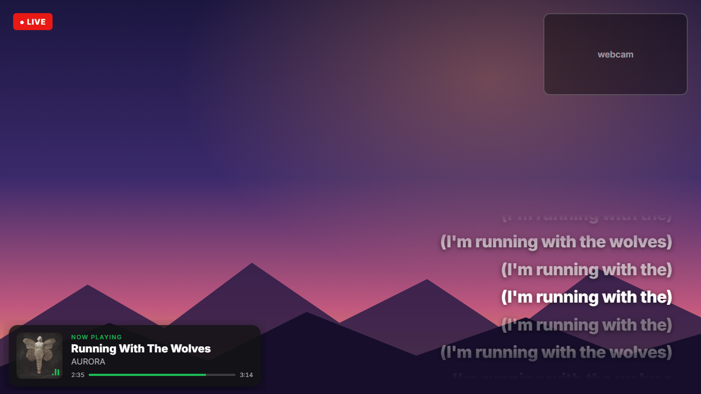
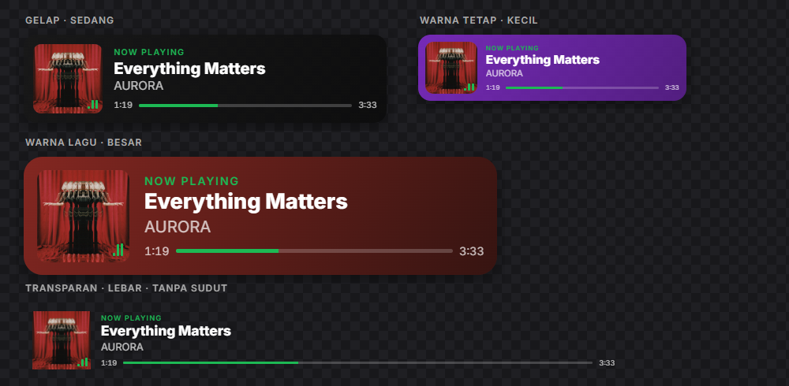
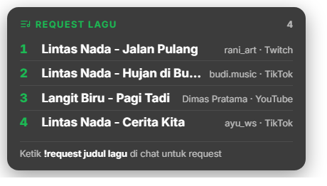

Lagu Spotify kamu, tampil di stream
Kartu lagu yang sedang diputar, lirik tersinkron seperti di Spotify, dan request lagu dari penonton, sebagai overlay di OBS. Tanpa coding, tanpa setup ribet.

Semua yang dibutuhkan stream musikmu
Berjalan diam-diam di system tray. Semua pengaturan ada di halaman browser, dan perubahannya langsung terlihat di OBS.
Kartu Now Playing
Cover, judul, artis, dan progress bar dalam empat layout. Warnanya bisa mengikuti cover album, dan bisa simpan beberapa gaya untuk scene berbeda.
Lirik tersinkron
Baris per baris seperti di Spotify. Liriknya dari LRCLIB dan tersimpan di PC. Lirik yang salah bisa diganti dari halaman pengaturan.
Request lagu dari penonton
Penonton mengetik !request di chat Twitch, YouTube, atau TikTok. Dengan Spotify Premium, request diputar otomatis lewat antrian Spotify, lalu playlist kamu lanjut lagi.
Aman saat iklan Spotify Free
Saat iklan, kartu menampilkan pesan jeda dan suara Spotify dibisukan atau dikecilkan, lalu kembali normal saat lagu diputar lagi.
Riwayat lagu
Setiap lagu yang kamu putar, per hari, siap disalin ke deskripsi VOD.
Bukan cuma Spotify
Membaca Spotify Desktop tanpa login. Opsional, bisa juga membaca YouTube Music, Apple Music, TIDAL, dan player lain di PC yang sama.
Lagu selanjutnya
Kartu kecil yang menampilkan request berikutnya beserta nama penontonnya, atau lagu berikutnya di antrian Spotify.
Update sekali klik
Kalau ada versi baru, klik Update sekarang. Installer dicocokkan dengan checksum SHA-256-nya, lalu aplikasi terbuka lagi sendiri.
Pengaturan aman
Pengaturan dicadangkan otomatis dan dipulihkan kalau file-nya rusak. Bisa diekspor untuk dipindah ke PC lain, tanpa login atau key.
Sesuaikan dengan gaya stream-mu
Atur ukuran, sudut, latar, dan warna aksen dengan preview langsung. Salin URL-nya, atau seret kotaknya langsung ke OBS.
- Layout baris, vertikal, minimal, dan vinyl
- Tampil terus, atau hanya saat ganti lagu
- Ukuran Browser Source dihitung otomatis


Request dari semua platform
Aplikasi hanya mendengarkan chat dan tidak pernah mengirim apa pun. Setiap request dicocokkan dengan lagu yang benar di Spotify, dan overlay memberi tahu penonton apakah request-nya masuk, tidak ketemu, atau ditolak.
- Putar otomatis lewat antrian Spotify (Premium)
- Batas per penonton, durasi maksimal, blokir kata
- Request ditandai di riwayat lagu
Siap dipakai dalam beberapa menit
Cukup sekali. Setelah itu tinggal biarkan aplikasinya berjalan saat streaming.
Tetap di PC kamu
Tanpa akun, tanpa telemetri, tanpa analitik. Overlay dilayani dari PC-mu sendiri dan hanya bisa diakses dari PC itu. Aplikasi hanya terhubung ke layanan lain untuk fitur yang kamu nyalakan sendiri.
Baca kebijakan privasiOpen source, lisensi MIT
Semua kodenya ada di GitHub. Setiap installer di-build oleh GitHub Actions dan disertai checksum SHA-256.
Bahasa Indonesia dan Inggris
Halaman pengaturan dan menu tray mengikuti bahasa Windows, dan bisa diganti kapan saja.
Dukung pengembangan
Aplikasi ini gratis. Kalau membantu stream-mu, kamu bisa mentraktir developernya lewat Trakteer.